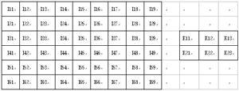

The animations left graphically illustrate the convolution of two boxcar functions (left) and two Gaussians (right). In the plots, the green curve shows the convolution of the blue and red curves as a function of t, the position indicated by the vertical green line. The gray region indicates the product g(τ)f(t-&τ) as a function of t, so its area as a function of t is precisely the convolution. One feature to emphasize and which is not conveyed by these illustrations (since they both exclusively involve symmetric functions) is that the function g must be mirrored before lagging it across f and integrating. Convolutes two images. Convolution is the same as multiplication in the frequency domain. Therefore, the resultant image will have the characteristics of both images. In the simplest possible example, a sharp image convolved with an image of a blurred point will become blurry. An image convolved with a single point is unchanged. Convolution is a simple mathematical operation which is fundamental to many common image processing operators. Convolution provides a way of `multiplying together' two arrays of numbers, generally of different sizes, but of the same dimensionality, to produce a third array of numbers of the same dimensionality. This can be used in image processing to implement operators whose output pixel values are simple linear combinations of certain input pixel values. In an image processing context, one of the input arrays is normally just a graylevel image. The second array is usually much smaller, and is also two-dimensional (although it may be just a single pixel thick), and is known as the kernel. Figure 1 shows an example image and kernel that we will use to illustrate convolution.  Figure 1 An example small image (left) and kernel (right) to illustrate convolution.
The labels within each grid square are used to identify each square. The convolution is performed by sliding the kernel over the image, generally starting at the top left corner, so as to move the kernel through all the positions where the kernel fits entirely within the boundaries of the image. (Note that implementations differ in what they do at the edges of images, as explained below.)Each kernel position corresponds to a single output pixel, the value of which is calculated by multiplying together the kernel value and the underlying image pixel value for each of the cells in the kernel, and then adding all these numbers together. So, in our example, the value of the bottom right pixel in the output image will be given by: O57 = 57K11 + I58K12 + I59K13 + I67K21 + I68K22 +I69K23 If the image has M rows and N columns, and the kernel has m rows and n columns, then the size of the output image will have M-m+1 rows, and N - n + 1 columns. Mathematically we can write the convolution as: O(i, j) = Σk=1,m Σl=1,n, I(i+k-1, j+l-1) K(k, l) where i runs from 1 to M - m + 1 and j runs from 1 to N - n + 1. Note that many implementations of convolution produce a larger output image than this because they relax the constraint that the kernel can only be moved to positions where it fits entirely within the image. Instead, these implementations typically slide the kernel to all positions where just the top left corner of the kernel is within the image. Therefore the kernel `overlaps' the image on the bottom and right edges. One advantage of this approach is that the output image is the same size as the input image. Unfortunately, in order to calculate the output pixel values for the bottom and right edges of the image, it is necessary to invent input pixel values for places where the kernel extends off the end of the image. Typically pixel values of zero are chosen for regions outside the true image, but this can often distort the output image at these places. Therefore in general if you are using a convolution implementation that does this, it is better to clip the image to remove these spurious regions. Removing n - 1 pixels from the right hand side and m - 1 pixels from the bottom will fix things. Convolution can be used to implement many different operators, particularly spatial filters and feature detectors. Examples include Gaussian smoothing and the Sobel edge detector. Convolution Theorem Let f(x, y) and g(x, y) be two continuous functions. Denote the Fourier transform of these functions by F(fx: fy) and G(fx: fy) . The convolution of the two Fourier transforms F(fx: fy) and G(fx: fy) , F(fx: fy)∗G(fx: fy)is defined as: F(fx:fy)∗ G(fx:fy) = ∫-∞∞∫∞-∞F(f'x:f'y)G(fx-f'x:fy-f'y)df'xdf'y (4.8) According to the convolution theorem the Fourier transform of the product of the two functions, f(x, y) and g(x, y), equals the convolution of the Fourier transform of the two functions: F[f(x:y)g(x:y)] = F(fx:fy)∗ G(fx:fy) (4.9) Discrete-Convolution The behavior of a linear, time-invariant discrete-time system with input signal x[n] and output signal y[n] is described by the convolution sum y[n] = Σk=-∞∞h[k] x[n-k] The signal h[n], assumed known, is the response of the system to a unit-pulse input. The convolution summation has a simple graphical interpretation. First, plot h[k] and the "flipped and shifted" x[n - k] on the k axis, where n is fixed. Second, multiply the two signals to obtain a plot of the summand sequence indexed by k. Summing the values of this sequence with respect to k yields y[n]. These operations can be repeated for every value of n of interest. Continuous-Convolution The behavior of a linear, continuous-time, time-invariant system with input signal x(t) and output signal y(t) is described by the convolution integral y(t) = ∫-∞∞h[v]x[t-v]dv The signal h(t), assumed known, is the response of the system to a unit impulse input. To compute the output y(t) at a specified t, first the integrand h(v) x(t - v) is computed as a function of v. Then integration with respect to v is performed, resulting in y(t). These mathematical operations have simple graphical interpretations. First, plot h(v) and the "flipped and shifted" x(t - v) on the v axis, where t is fixed. Second, multiply the two signals and compute the signed area of the resulting function of v to obtain y(t). These operations can be repeated for every value of t of interest. Properties of Convolution There are a number of important mathematical properties associated with convolution. ∗Convolution is commutative c=a⊗b=b⊗a ∗ Convolution is associative. c=a⊗(b⊗c)=(a⊗b)⊗c=a⊗b⊗c ∗ Convolution is distributive. c=a⊗(b+d)=(a⊗b)+(a⊗d) where a, b, c, and d are all images, either continuous or discrete.